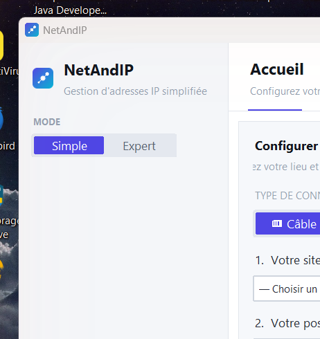

Profils réseau
Sauvegardez autant de configurations réseau que nécessaire. Nommez-les, organisez-les, rappliquez-les en un clic.
NetAndIP simplifie la configuration réseau pour les professionnels IT. Basculez d'un profil réseau à l'autre sans jamais ouvrir les paramètres Windows.
Sans inscription Aucune donnée collectée Fonctionne hors ligne Windows 10 / 11 x64

Conçu pour les techniciens IT, les administrateurs réseau et les équipes terrain qui changent de site plusieurs fois par jour.
Sauvegardez autant de configurations réseau que nécessaire. Nommez-les, organisez-les, rappliquez-les en un clic.
Interface épurée pensée pour les utilisateurs non-techniques : choisissez votre site, votre poste, appliquez.
Accès direct à tous les paramètres réseau : IP, masque, passerelle, DNS primaire et secondaire.
Organisez vos configurations par lieu (bureau, client, entrepôt) et par rôle (imprimante, bureau, serveur).
Exportez vos profils en JSON, partagez-les avec vos collègues, importez-les sur un nouveau poste.
Aucune donnée personnelle collectée ou transmise. Tout reste sur votre machine. Conforme RGPD.
Pas de serveur, pas de compte, pas de configuration complexe.
Ouvrez config.json ou utilisez l'interface Expert pour déclarer vos lieux (bureau, site client, entrepôt) et les rôles associés (poste fixe, imprimante, serveur).
Dans le mode Simple, sélectionnez votre site et votre poste. NetAndIP pré-remplit l'adresse IP correspondante. Cliquez sur « Enregistrer » pour créer le profil.
Choisissez un profil dans la liste, cliquez sur « Appliquer ». Windows configure votre interface réseau en moins de 2 secondes. Aucun redémarrage nécessaire.
Vos données ne sont jamais supprimées lors du changement de plan.
Oui. La version gratuite est entièrement fonctionnelle avec jusqu'à 3 profils réseau. Aucune inscription, aucune carte bancaire, aucune limite de durée.
Non. Toutes vos configurations restent sur votre machine. NetAndIP ne contacte internet que pour vérifier les mises à jour (1 fois par jour, désactivable). Aucune donnée personnelle n'est collectée. Voir notre politique de confidentialité.
Oui, uniquement pour appliquer une configuration réseau (l'outil netsh de Windows l'exige). La consultation et la création de profils fonctionnent sans droits élevés. Windows vous demandera une élévation au moment de l'application.
Oui, c'est normal pour un logiciel indépendant distribué sans certificat de signature coûteux. Cliquez sur « Informations complémentaires » puis « Exécuter quand même ». Le code source est disponible sur GitHub pour votre tranquillité.
NetAndIP vérifie automatiquement les mises à jour une fois par jour. Vous verrez une notification dans l'application. Vous pouvez aussi vérifier manuellement via À propos → Vérifier les mises à jour. Vos profils et configurations sont conservés lors de la mise à jour.
Oui. Exportez votre fichier config.json (sites et rôles) et profiles.json (profils réseau), puis importez-les sur les machines de vos collègues. La version Pro permet également de partager directement depuis l'interface.
Téléchargez NetAndIP gratuitement. Aucune inscription requise.
Télécharger NetAndIP v3.0.0